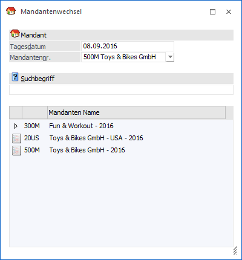
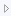
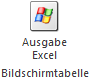
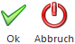
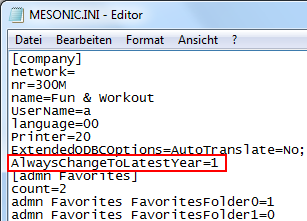

Im Menüpunkt…
1 WinLine START
1 Datei
1 Mandantenwechsel
… kann jederzeit von einem Mandanten (dem aktuellen) auf einen anderen Mandanten gewechselt werden (der natürlich vorher schon existent sein muss).
Hinweis
Ein Wechsel ist auch jederzeit über den Ribbon "MESONIC" möglich.
Achtung
Es werden nur die Mandanten angezeigt, für die der Benutzer auch die notwendige Berechtigung hat (Details finden Sie im WinLine ADMIN - Handbuch).

Ø Tagesdatum
An dieser Stelle kann das Datum hinterlegt werden, mit welchem in WinLine standardmäßig gearbeitet werden soll.
Hinweis
Dieses Datum wird in weiterer Folge z.B. in WinLine FAKT als Belegdatum oder in WinLine FIBU als Buchungsdatum vorgeschlagen.
Ø Mandantennr.
Hier muss der Mandant ausgewählt werden, der bearbeitet werden soll, wobei immer der zuletzt bearbeitete Mandant vorgeschlagen wird. Um einen anderen Mandanten auszuwählen, gibt es mehrere Möglichkeiten:
ü Auswahl aus der Auswahlbox
Der
gewünschte Mandant wird aus der Auswahlbox ausgewählt, wobei z.B. der Mandant
gefunden werden kann, indem die ersten Zeichen der Mandantennummer eingegeben
werden.
ü Suche nach einem Mandanten
Im
Feld "Suche" kann nach Mandanten gesucht werden, wobei hier eine Volltextsuche
nach der Mandantennummer und der Bezeichnung (stammt aus der
Datenbankverbindung, welche im WinLine ADMIN eingegeben wird) durchgeführt
wird
ü Auswahl aus der Tabelle
In der
Mandantentabelle werden alle verfügbaren Mandanten angezeigt. Hierbei gibt es
folgende Unterscheidung zwischen den Einträgen:
ü einfache Mandanten
Einfache
Mandanten werden durch das Symbol gekennzeichnet.
ü zusammengefasste oder gruppierte
Mandanten
Gruppierte Mandanten werden durch das Symbol

dargestellt, wobei durch einen Doppelklick auf das Icon die zugehörigen Mandanten angezeigt werden. Diese Gruppierung ist z.B. für mehrere Wirtschaftsjahre eines Mandanten sinnvoll. Die Gruppierung selbst erfolgt im WinLine ADMIN (Datei - Mandanten gruppieren).Hinweis
Die Übernahme eines Mandanten kann per Doppelklick auf die Mandantennummer oder die Bezeichnung erfolgen.
Tabellenbutton

Ø Ausgabe Excel
Durch Anwahl des Buttons "Ausgabe Excel" wird der Inhalt der Tabelle nach Microsoft Excel übergeben.
Buttons

Ø Ok
Durch Anwahl des Buttons "Ok" bzw. der Taste F5 wird der markierte Mandant ausgewählt.
Ø Ende
Durch Anwahl des Buttons "Ende" bzw. der Taste ESC wird der Programmbereich geschlossen und kein Mandantenwechsel durchgeführt.
Hinweis
Wird ein Mandantenwechsel durchgeführt, so wird im Mandanten, in welchen gewechselt wird, immer das Wirtschaftsjahr des Ausgangsmandanten aufgerufen (wenn vorhanden).
Beispiel
ü Mandant 300M - höchstes Wirtschaftsjahr 2024
ü Mandant 500M - höchstes Wirtschaftsjahr 2023
Arbeitet man nun im Mandanten 300M im Wirtschaftsjahr 2022 (!) und wechselt in den Mandanten 500M, so wird dort das Wirtschaftsjahr 2022 aufgerufen.
Wenn immer in das höchstmögliche Wirtschaftsjahr gewechselt werden soll, dann muss ein Eintrag in der Datei "mesonic.ini" erfolgen (unter [company] der Eintrag "AlwaysChangeToLatestYear=1").
